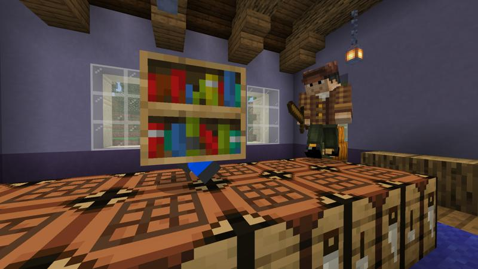

Minigame Hide and Seek
Um pouco sobre Hide and Seek:
Hide and Seek consiste basicamente em um pique-esconde, onde
de forma aleatória são sorteados o procurador e os que vão se esconder, os que se escondem
tem 30 segundos para poderem se camuflar pelo mapa através de blocos que estão nesse
determinado mapa, ou seja, os que se escondem se camuflam no mapa. Após esses 30
segundos, o procurador é solto no mapa e tem que procurar os outros players, o procurador
recebe uma espada e tem que derrotar os demais players, aqueles que foram encontrados se
tornar procuradores, os players que se escondem recebem um bastão com o encantamento de
repulsão, para conseguirem um tempo para fugirem. A dinâmica para vencer consiste em 2 modos,
todos os players se tornam procuradores ou se restar ao menos 1 player escondido ele vence.
